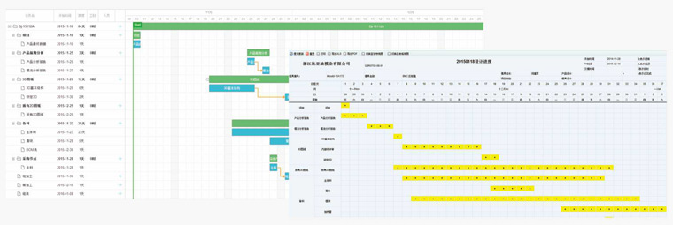

模具是压铸生产中三大必备因素之一，模具使用的好坏直接影响到模具的寿命，生产效率和产品的质量，关系着压铸的成本。对于压铸车间来说，模具的制造过程管理、良好的维护和保养是正常生产顺利进行的有力保障，有利于产品质量的稳定性，在很大程度上降低无形的生产成本，从而提高生产效率。
系统实施目标是针对压铸模具工厂管理层最关心的模具设计工艺、模具项目管理、零件自动排程、车间条码扫描、模具外发加工、品质检测系统、绩效成本量化等七个方面提出最佳的模具管理系统解决方案。具体分析如下：
模具订单管理系统
- 针对模具估价、报价单，订单，出货单/移交进行日常管理，同时与财务系统勾稽，由系统自动抛转应收帐款。提供各种销售出货状况、逾期未出货、客户退回/折让、帐款追踪、销售分析等报表。
- 快速进行模具报价，分析设计、加工、材料、人工、设备、委外加工、管销费用等。
- 对历史报价单进行管理和参考作用。
- 具有模具报价直接成本与模具的实际成本对比报警功能，具有模具报价的统计分析功能。
- 可以直接把报价单内容转入业务订单。
- 业务订单查询功能，方便查询模具生产进度，收款情况，成本，以及修改模
- 能预测设备负载以及快速准确的客户交期应答，模具产量大幅提高。
- 区分新开模具、维修模具、返修模具等不同订单作业流程。

模具设计管理系统
建立标准化设计流程，以任务制管理模具设计师的时间与节点。
- 建立和维护模具图纸，物料列表，设计变更数据，工件工艺流程，工作中心等生产所用的基础数据，这些数据是模具计划排程、机台稼动率统计，成本分析运行基础。
- 与CAD等设计软件集成，自动读取BOM清单信息，保证与设计数据一致性。
- 快速实现工艺设计、图纸下发、零件备料等。
- 完整的、层次化的BOM，为模具的生产、采购提供正确的依据。
- 支持模具企业分批、多次发布BOM进行采购和生产的特点。
- 提供了结构参考、BOM复用、物料反查等功能, 支持Excel直接导入及导出。
- 通过BOM直接查看模具零件的2D或3D模型。
- 直接从BOM查看模具零件、标准件的生产、采购或库存状态，信息高度共享。
- 对修改模需要增补的物料，实行单独管理、简化流程，保证主BOM的稳定。
- 制订零件工艺时，可导入模板快速制订工艺路线，提高工艺流程的建立效率，促进工艺标准化。
- 生成工艺卡片，自动生成条形码，实现图纸设计与工艺设计的协同操作。
- 建立电极与所加工的模具零件关联关系，保证电火花加工的生产计划。
- 制定工件标准工时，此工时是由车间生产经过多年积累总结出来的，对车间的加工起监督、考核作用。
- 导出模具设计BOM进行当前物料单价得出成本预估，从源头保证项目的盈利。将设计变更引起的浪费减到最低程度。
- 规范了设计与采购部门的沟通流程。
模具项目管理系统
- 在确定每一套新开模具的结构的时候，根据每套模具的结构特点，本系统为期制订行之有效的模具项目计划。模具项目可暂停、可冻结。项目资料信息自动提醒到相关部门与人员。
- 提供多种项目计划模版和计划节点控制方案，快速生成模具项目计划。
- 项目计划、加工计划、设计计划、修模计划、设变计划全面联动，层层把控。
- 可设定各节点进度计划模板，快速制订各节点自动关联进度计划。
- 以甘特图形式对每套模具进行项目大日程计划管理，通过各部门项目作业记录，自动跟进项目执行情况，对延期计划进行预警。
- 模具项目计划与此模具关联的零件加工计划自动关联，车间零件加工信息自动反馈到模具大日程计划中，提升项目跟进及有效控制。
- 上传和下载与项目相关的各种表单和附件，便于共享和查看。
- 整合试模数据，标准化试模流程，包括了试模申请、试模问题点记录、试模报告和打印试模单功能。
客户可登陆查看进度与零件照片流，了解模具履历表，与计划进行对比。
模具生产排程系统
- 高度智能的自动排产功能，提供推式与拉式相结合的计划排产功能。
- 系统自动比对项目大计划中的模具生产加工计划，对已超期或可能超期的工序任务报警提醒。
- 几十秒即可完成数万道工序的自动化排产工作。
- 制定每套模具加工零件详细的加工件数，工作中心，加工路线，担当者，加工工序开始时间和计划结束时间，作业说明等加工信息。
- 可设置工序暂停或结清功能，如果暂停后，此加工任务则自动不能参与生产操作等。
- 自动生成采购计划、委外加工计划和车间加工计划。
- 充分考虑企业内部产能，合理控制加班和外发加工计划。
- 变更、修模计划等各种异常发生后的计划调整。
- 可动态实时查询各设备类型的设备负荷率和嫁动率及对比柱状图和趋势图。
- 可动态查询各设备实时状态。
- 直接甘特图快速调整模具全部或部分零件的加工计划、外发加工计划。
- 制订详尽的零件加工计划有利于生产过程控制，确保多套模具的进度。
- 帮助生管人员在安排生产计划时合理安排生产计划，减少资源瓶颈，消除拖期隐患。
- 生管人员可时随时清楚的知道机台产能负荷情况，快速确定和调整模具生产计划中的加工时间。
- 提供直观的负荷率图形分析，最大程度做到设备、人力负荷平衡，均衡生产。
- 可查看实际加工工时和预估加工工时的对比表，以便分析差异，不断提高预估工时的准确度。
- 通过优化排产，提高设备利用率，减少不必要的加班。
模具车间现场管理
- 根据生产计划安排实际生产。
- 集成了制造执行系统MES,现场加工人员直接操作独立安装的数据终端，简单易操作。
- 应用二维码技术，现场直接刷卡采集，主管可查到最新的零件加工情况、模具进度和订单进度。
- 车间电子看板，直观显示零件加工情况，追踪模具进度和订单进度。
- 第一时间掌握了零件延期、修改模的加工计划，就能及时采取相应的处理措施，加工完成后填写的实际工时，有利于成本的控制，也利于完善车间的标准工时。
- 为绩效管理提供科学的依据
外发加工管理系统
实现外协加工的多快好省
- 随时监控车间产能，做到有计划的外发加工。
- 自动调度排产后的报警提醒清单，提出外协任务，既可减少盲目外协，又可实现及时外协，确保交期。
- 支持单工序（如热处理）外发加工，零件批量外发加工以及模具外发等多种委外加工处理方式。
- 由系统快速生成委外加工建议，实现便捷外发加工处理，严守客户订单交期。
- 外发厂商管理、单价、件数、重量等管控及价格管控，自动核算委外加工费用
- 通过系统对外协送出、外协接收、外协检验进行信息记录， 可监控委外加工过程，减少外协失控现象。
- 可对加工点某段时间内的准时率、不合格率等业绩进行统计。
- 委外加工计划与零件加工计划自动关联，全盘掌握零件加工进度管理。
- 通过优化排产，提高设备利用率，减少不必要的外协。
模具品质管理系统
用标准化来为品质提供基础保障，用检测来保障过程品质。
- 模具管理系统质检报告收集的数据和信息有效地进行管理, 以确保加工部分的可靠性。质量控制(QC)的过程是验证项目按计划进行,且尺寸规格是符合客户质量要求。
- 我们利用先进的测量设备管控模具和产品质量，用质量管控的科学方法在先进的和完整的质量管控系统之中，模具管理系统质量控制计划是由模具或者产品项目开始启动的时候制作的，它会监控生产过程中的每个阶段，100%尺寸全检以确保整个模具制造过程和模具注塑的准确性和可靠性。
- 记录和统计模具生产过程各阶段的品质信息，包括采购物料入库检验、工序检验、试模报告、模具检验、成品检验等。
- 可设定加工人员完成某道工序后必须经过品质部或者模具组长检验合格后，才能进入下一道工序。这样既可以加强对加工人员的要求，也是提高加工品质行之有效的途径。
- 分析品检工作中的不足，促进品质不断改善和提高，为绩效考核和管理决策提供依据。
- 检测过程纳入微信管理，实时记录检测人员工时及进度情况。
模具物料管理系统
- 从物料请购、询价、采购、入库、领用等全过程管理。
- 通过独家MRP运算，直接从BOM、库存和生产等模块获取物料或外协加工的采购需求。
- 随时查看采购物料的需求来源，帮助采购人员高效、正确地处理和跟踪采购业务。
- 帮助企业的仓库管理人员对库存物料的入库、出库、调拨和盘点等日常工作进行全面的控制和管理。
- 可对物料报废、借用、退货、损益、转库等特殊问题进行处理。
- 多单位自动转换，记录原材料的尺寸、重量及损耗等信息。
- 设计人员方便查询库存散料的尺寸，有效管理该类物料的库存和损耗。
财务成本及绩效管理
- 集成强大的财务管理功能，包括与预算管理、应收应付、出纳管理、固定资产、成本核算等模块，实时生成各项财务报表。
- 日常账务及财务报表工作，如凭证导入、分摊、查询、审核、登帐、汇总、月结、汇兑损益调整等操作，自动生成总账、明细分类账等。
- 满足不同组织形式特殊的会计需求,如多货币转换、多会计制度、多税制处理、集团报表合并及特定的报表需求设计。
- 与模具制造系统相互勾稽，自动结转所有从物流环节结转的凭证，体现全面企业资金流管理与控制功能。
- 自动生成应收账款、应付账款，记入总账管理系统。
- 系统可设定客户信用额度，追踪客户的收款、拖欠款情况。
- 机台利用率大幅度提升。
- 员工考勤管理、工资自动计算发放，微信自动发布。做到工资透明、实时、准确。
- 与开票软件无缝链接，通过Excel导入保持同步。
- 成本核算支持针对每个订单或生产任务号的各项实际成本，如材料成本、加工成本、制造成本、外协成本、质量成本的核算统计。
- 可自动实时动态统计出模具制造过程中的材料成本、人工成本、制造成本、外协成本和异常成本等模具制造过程中的直接成本。
- 可计算财务要求的制造分摊成本，提供料、工、费标准与实际的对比分析功能等。
- 多角度成本分析功能，区分正常与异常成本，超报价成本、预算成本等预警。
- 追踪每个零件所发生的材料成本，每一个工序所发生的加工成本，每一个委外加工所发生的委外成本。
- 方便地调用系统上某一套模具产生的采购费用，加工成本等相关资料，这样就可以清楚掌握该模具的利润情况。